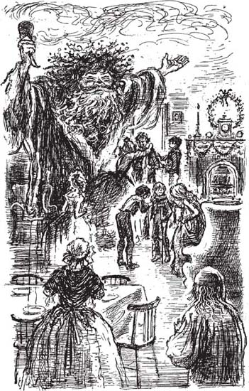

10
Listen to Part 1:

Giáng sinh cùng gia đình Cratchit
Tiếng chuông nhà thờ ngừng ngân. Scrooge lại nắm lấy áo choàng của hồn ma và họ tiếp tục cuộc hành trình. Không ai có thể nhìn thấy họ khi họ đi qua những con phố của thành phố.
Họ đi qua nhiều ngôi nhà nhỏ và cuối cùng họ cũng dừng lại. Hồn ma của Hiện tại đã tìm thấy nhà của Bob Cratchit. Đó là một ngôi nhà nhỏ với hai phòng ở dưới trệt và hai phòng ở trên lầu. Bob Cratchit, vợ ông và sáu đứa con sống trong ngôi nhà nhỏ này.
Hồn ma vẫy đuốc và ánh sáng đỏ rực chiếu vào ngôi nhà nhỏ. Scrooge rất mừng vì hồn ma quan tâm đến Bob Cratchit và gia đình ông.
Rồi đột nhiên Scrooge và hồn ma đã vào trong nhà. Bà Cratchit và một trong những cô con gái của bà, Belinda, đang xếp đĩa, dao và nĩa lên bàn. Họ đang chuẩn bị dùng bữa tối Giáng sinh. Cậu bé Peter và hai đứa trẻ nhỏ hơn cũng ở đó. Chúng rất phấn khích.
Bà Cratchit hỏi: "Martha đâu?" "Mẹ hy vọng con bé không muộn."
Cô con gái lớn của bà bước vào cửa và nói: "Con ở đây, mẹ à." "Con muộn vì hôm nay con phải làm rất nhiều việc."
Những đứa trẻ nhỏ đang nhìn ra ngoài cửa sổ. "Cha về rồi! Cha về nhà từ nhà thờ rồi!" Chúng reo lên. "Chúng ta hãy trêu cha một chút nào. Martha ơi, núp đi! Núp sau cánh cửa đi."
Và thế là Martha nhanh chóng trốn sau cánh cửa, khi Bob bước vào. Bob bế Tiny Tim, đứa con út của ông. Bob nhẹ nhàng bế con trai mình khỏi vai và đặt cậu bé xuống sàn. Cậu bé không thể đi lại bình thường. Cậu bé có những chiếc băng kim loại quấn quanh chân để giúp cậu tập đi. Cậu bé cũng chống vào một cái nạng gỗ.
Bob hỏi: "Martha đâu?"
Listen to Part 2:
Vợ ông đáp: "Con bé đi làm. Con bé không về được."
Bob nói: "Không về được ấy hả?" Đột nhiên ông trông rất buồn.
Martha không muốn làm cha mình buồn. Cô bé kêu lên: "Cha ơi, con ở đây!" Martha chạy ra từ sau cánh cửa và ôm chầm lấy cha mình. "Đó là trò đùa thôi! Đừng buồn nhé cha."
Peter nói: "Tiny Tim ơi, lại đây xem bánh pudding Giáng sinh kìa." "Chúng đang nấu trong một chiếc nồi lớn trên bếp lửa."
Những đứa trẻ nhỏ hơn đưa em trai vào phòng khác để xem món bánh pudding hoa quả đặc biệt của Giáng sinh.
Bà Cratchit hỏi: "Tiny Tim có ngoan ngoãn ở nhà thờ không?"
Bob đáp: "Cậu bé ngoan lắm." "Cậu bé lúc nào cũng ngoan. Cậu bé luôn quan tâm đến người khác, chứ không chỉ quan tâm đến bản thân mình."
Những đứa trẻ quay trở lại phòng. Tiny Tim ngồi trên chiếc ghế nhỏ cạnh lò sưởi. Bà Cratchit nói với Peter và hai đứa trẻ nhỏ hơn rằng:
"Con ngỗng đã chín rồi." "Các con đến tiệm bánh và mang nó về cho mẹ."
Và thế là, Scrooge và Hồn ma của Hiện tại nhìn gia đình Cratchit dùng bữa tối Giáng sinh. Có tám người và con ngỗng thì nhỏ. Tất cả mọi người đều nói con ngỗng ngon như thế nào. Họ nói về việc con ngỗng tốn ít tiền như thế nào. Nhưng chẳng ai nói rằng nó nhỏ!
Listen to Part 3:

Martha chạy ra từ sau cánh cửa và ôm chầm lấy cha mình.
Sau đó, bà Cratchit mang bánh pudding Giáng sinh vào. Có tám người và chiếc bánh pudding thì nhỏ. Mọi người đều nói rằng nó rất ngon. Nhưng chẳng ai nói rằng nó nhỏ.
Sau bữa tối, Bob rót đồ uống vào cốc cho mọi người. Sau đó, ông giơ cốc lên và nói: "Giáng sinh vui vẻ với tất cả mọi người, các bạn yêu quý của tôi! Chúa phù hộ chúng ta!"
Tất cả những người nhà Cratchit cũng giơ cốc lên. Và Tiny Tim nói: "Chúa phù hộ cho tất cả mọi người!"
Bob nắm tay đứa con út của mình. Tiny Tim là đứa con mà ông yêu quý nhất. Tiny Tim yếu ớt và ốm đau. Nhưng Bob không có tiền để thuê bác sĩ. Bob lo lắng rằng Tiny Tim sẽ sớm qua đời.
Scrooge đang nhìn Bob Cratchit và Tiny Tim. Ông đột nhiên nói: "Hồn ma ơi, hãy nói với tôi rằng Tiny Tim sẽ sống." "Hãy nói với tôi rằng cậu bé sẽ không chết."
Hồn ma đáp: "Gia đình này rất nghèo." "Họ không thể mua đủ thức ăn." "Họ không thể thuê bác sĩ." "Cậu bé sẽ chết nếu gia đình không có thuốc men và nhiều thức ăn hơn." "Sẽ có một chiếc ghế trống bên cạnh lò sưởi." "Sẽ có một cái nạng gỗ mà không ai sử dụng."
Scrooge nói: "Ồ, không."
Hồn ma nhắc lại: "Đúng vậy, cậu bé sẽ chết."
Listen to Part 4:
Sau đó, hồn ma nói rằng: "Có quá nhiều người trên thế giới này." "Hãy bảo họ đi đi và chết đi."
Scrooge kinh hoàng nhìn hồn ma. Đó chính là lời của ông. Ông nhớ lại người đàn ông đã đến văn phòng của ông. Người đàn ông đó đã xin tiền để giúp những người nghèo ở London.
Sau đó, Scrooge nghe thấy Bob Cratchit lại nói. Bob một lần nữa giơ cốc lên. Ông nói: "Và Chúa phù hộ cho ông Scrooge."
Bà Cratchit nói: "Ồ không, Bob." "Ông Scrooge không quan tâm đến anh." "Ông ấy không quan tâm đến chúng ta." "Ông ấy chỉ quan tâm đến tiền."'
Bob đáp: "Hôm nay là ngày lễ Giáng sinh." "Chúng ta phải uống rượu và chúc ông Scrooge mọi điều tốt lành."
Vì vậy, tất cả các thành viên trong gia đình đều uống rượu và nói: "Chúa phù hộ cho ông Scrooge."
Chẳng mấy chốc, tất cả những người nhà Cratchit lại vui vẻ trở lại. Họ nói chuyện, cười đùa và hát những bài hát. Tiny Tim hát bằng giọng hát ngọt ngào nhưng nhỏ nhẹ:
Tuyết lạnh giá!
Đứa trẻ lạc đường!
Nhà của nó rất xa …
Listen to Part 5:
Ánh sáng từ ngọn đuốc của hồn ma chiếu sáng gia đình Cratchit và họ đều rất hạnh phúc.
Mục lục
- Trang tiêu đề
- Mục lục
- Lưu ý về tác giả
- Lưu ý về cuộc sống ở Anh vào thế kỷ XIX
- 1 Ebenezer Scrooge
- 2 Khách viếng thăm Scroog
- 3 Bóng ma Marley
- 4 Tin tức cho Scroog
- 5 Bóng ma Giáng sinh quá khứ
- 6 Scroog khi còn là một đứa trẻ
- 7 Giáng sinh với nhà Fezziwig
- 8 Cô gái yêu Scroog
- 9 Bóng ma Giáng sinh hiện tại
- 10 Giáng sinh với nhà Cratchit
- 11 Một lễ Giáng sinh vui mừng ở mọi nơi
- 12 Bóng ma Giáng sinh sắp tới
- 13 Tiny Tim
- 14 Một người đã thay đổi
- Những điểm chính cần hiểu
- Trang bản quyền